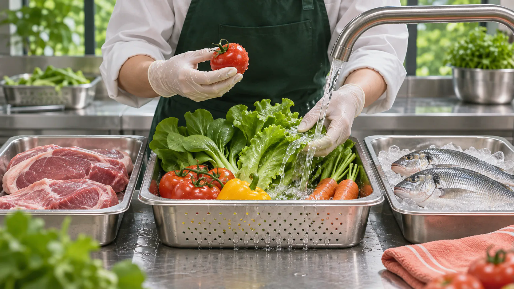

当我们走进一家餐厅，翻开菜单，看到的是菜品名称、精美图片和对应价格。但在这些信息之外，还有一个问题常常被忽略：这道菜究竟是如何制作出来的？
它是在门店从原料开始烹制，还是经过中央厨房预处理后配送到店？门店又完成了哪些加工环节？当消费者无法从菜单中获得这些信息时，是否还有机会在点餐前了解真相？
近年来，围绕预制菜的讨论持续升温。从食品安全、口味和价格，到加工方式与消费者选择权，公众对预制菜的关注正在不断延伸。随着餐饮环节信息明示问题受到政策关注，一个新的问题也随之浮现：消费者是否真正拥有了解菜品加工方式的机会？
我们将目光聚焦北京，以公开平台数据、餐厅菜单调查和消费者问卷为计划中的调查路径，尝试寻找一盘菜背后的信息缺口。
这一次，我们不讨论预制菜究竟好不好，而是想知道：消费者有没有权利知道自己吃的是什么？
目前页面已呈现可核实的政策、公开评论与二手调查。北京门店实地调查、微博与大众点评文本样本、北京市成年消费者问卷尚未完成；相关图位展示调查设计，不冒充调查结果。
PART 01 / FROM A DISH
从一盘菜开始：
预制菜为什么成为公共议题？
政策提出明示方向，真正落到餐桌上，还要回答一道菜经过了哪些环节。
当“明示”成为关注焦点
预制菜的讨论，早已不只是关于食品本身的争议。
对于消费者而言，关注一道菜是否使用预制菜，背后可能涉及食品安全、价格公平、口味预期，以及对餐饮经营方式的知情需求。
餐饮环节的信息明示，意味着消费者有机会在消费之前了解更多菜品加工信息，并据此作出自己的判断。
但政策提出信息明示要求，并不意味着预制菜本身就应当被否定。对于餐饮经营者而言，使用中央厨房、半成品或其他标准化加工方式，也可能是经营管理和品质控制的一种选择。
真正值得关注的是：当消费者希望了解这些信息时，餐厅是否提供了足够清晰、准确的信息？
预制菜政策时间轴
点击年份查看政策与公共事件。横轴只表示时间顺序，不表示政策力度或舆情热度。
截至 2026 年 11 月 10 日核验：2026 年的明示方案仍在征求意见后的修改程序中，网页不将其写成已施行的强制义务。
一道菜要经过哪些环节？
一道菜从原料到餐桌，可能经历不同的加工环节。
从原料处理、集中加工、冷链配送，到门店复热、调味或最终烹制，不同餐饮模式下的加工流程存在差异。
消费者看到的可能都是一份完整的菜品，但其背后的制作过程却不一定相同。
因此，判断一道菜的加工方式，不能仅凭菜品外观，也不能简单地将中央厨房加工、半成品和所有预制食品混为一谈。
一个值得追问的问题是：当菜品的制作过程被隐藏在厨房之后，消费者还能通过什么渠道了解它？
一盘菜从原料到餐桌
选择步骤查看解释，或播放小动画。每一步使用不同的示意画面；这些画面不对应真实商家或生产记录。

“中央厨房参与”不自动等于政策定义的预制菜。流程中的具体环节会因菜品和企业而异。
PART 02 / PUBLIC DEBATE
舆论场中的预制菜：
公众究竟在争论什么？
从公共话题到一次就餐体验，讨论可能指向不同的诉求。
两种讨论场景
大众点评以餐饮消费评价为主要内容，用户通常围绕具体的门店、菜品和消费体验发表意见。
微博则承载着更多公共话题讨论，政策、食品安全和消费者权益等议题更容易进入公众视野。
当预制菜成为讨论对象，这两个平台上的用户究竟在关注什么？
微博与大众点评议题分布对比
计划统一关键词、时间窗口和有效文本标准，再按食品安全、价格、口味、加工方式、知情权编码。
图中灰线是版式占位，没有数值。现有 85 条评论来自抖音定向检索，不能拿来代替这两个平台做比较。
在 22 个公开抖音页面中摘录并人工释义了 85 条可见评论；另记录 15 个公开可见原帖或视频的标题与简介。它们用于观察讨论主题和表达方式，不能推断北京消费者或全网的态度比例。
查看逐条编码数据 ↗公众最常提及什么？
从评论和讨论中的高频词汇入手，可以初步观察公众关注的关键词及其表达差异。
相比于宏观的政策讨论，消费者在具体消费评价中，是否更倾向于使用“料理包”“现炒”“口味”等词汇？
而在公共讨论中，“食品安全”“知情权”“明示”等词汇是否更加突出？
预制菜讨论中的关键词
下方词语是 85 条抖音评论的人工议题标签，字号反映本批标签次数；一条评论可有多个标签。这不是微博或大众点评词频图。
从公共争议到消费体验
一条微博可能表达的是对某种餐饮现象的担忧，一条大众点评评论则可能来自消费者的一次具体就餐经历。
它们共同构成了预制菜争议的不同侧面。
而这些讨论最终指向了一个更具体的问题：当消费者真正走进餐厅，他们能够获得多少关于菜品加工方式的信息？
两个舆论场中的典型声音
原定微博与大众点评对照将在采集后更新。下列为已核对的抖音公开评论节录，点击卡片可查看原帖；评论内容不等于事实核验。
“21块钱一个馒头？”查看原帖 ↗便利与信任
“孕期，最敢点的外卖就是老乡鸡”查看原帖 ↗价格与便利
“主要是便宜，生意也挺好，”查看原帖 ↗餐前明示
“坚决要求菜单上标明是预制菜！”查看原帖 ↗自称餐后发现
“虽然不贵，但是心里就是过不去”查看原帖 ↗后厨工序猜测
“这厨房干一天活连厨余垃圾都找不到”查看原帖 ↗
短句核对于 2026 年 11 月 11 日。原帖链接未必能直接定位单条评论；涉及工艺的说法未经后厨核验。
“知道是预制仍愿意吃”和“原以为现炒、后来才得知另一种工序”可能产生不同反应。现有评论提示了这种差别，但样本是定向摘录，不能量化总体比例。下一步需要把“事前知情状态”与态度分开编码。
PART 03 / BEYOND THE MENU
菜单之外：
北京餐厅告诉了消费者多少？
从线上争论走回点餐现场。这里要测量的是信息是否公开，不是替餐厅判定菜品性质。
三个北京市区域、连锁与独立餐厅分层。门店名单、菜单截图和咨询记录尚未完成，以下 05—09 号图为执行设计，不呈现模拟比例。
我们选择哪些餐厅？
本次调查计划选取北京市三个区域作为样本范围，按照餐厅经营类型进行分层，并结合大众点评平台建立餐厅样本名单。
计划选取30家餐厅，其中包括连锁餐饮和独立经营餐厅，并对每家餐厅选取3道具有代表性的菜品，形成90道菜品调查样本。
北京餐厅调查样本分布图
正式图将标出 30 家入样餐厅的位置及经营类型。当前只显示采样框架，不虚构门店坐标。
待选区域 B
待选区域 C
待选北京
一张矩阵，看见餐厅的信息公开情况
不同餐厅之间，信息公开程度是否存在差异？
后续将把30家餐厅的菜品信息进行整理，把加工方式、加工地点、预处理环节等维度放入同一张矩阵中。
从整体情况来看，菜单是否只是提供了菜品名称和价格？不同经营类型的餐厅，在信息公开方面又有哪些差异？
图表08｜不同类型餐厅的信息公开程度对比
北京餐厅菜品信息透明度矩阵
30 行对应计划调查的餐厅，三列对应信息字段。悬停或点选空格查看后续将记录的证据。
不同类型餐厅的信息公开程度对比
连锁与独立餐厅的样本分母、菜品数量和菜单渠道确认后才能作图；目前不显示百分比。
菜单没有告诉我们的，询问之后能知道吗？
菜单上的信息只是消费者能够获取信息的第一道入口。
如果菜单没有说明，消费者能否通过主动询问获得答案？
后续将选取部分调查餐厅，通过线上客服或电话咨询，使用统一的问题了解菜品的加工方式、中央厨房参与情况以及门店具体加工环节。
在此基础上，计划将菜单公开信息与主动咨询后获得的信息进行对照。
从菜单到主动询问，消费者获取信息的过程是否顺畅？哪些信息可以直接看到，哪些信息需要进一步询问，又有哪些问题难以获得明确回答？
这不仅关系到餐厅的信息公开程度，也关系到消费者能否在点餐之前作出充分判断。
当一道菜的加工方式无法从菜单中看见，消费者是否真的拥有充分的选择权？
从菜单到询问：消费者能获得多少信息？
正式图会记录“菜单已说明、询问后明确、仍然模糊、未获答复”的路径及数量。
此处只有问询流程，没有已完成的商家答复；不能把流程图读成调查结论。
如果一道菜的加工方式无法从菜单看见，主动询问又得不到明确回答，消费者就难以在点餐前比较。这正是下一部分要从消费者侧检验的知情需求。
PART 04 / THE DINER'S VIEW
消费者究竟
想知道什么？
从红烧肉到面、饭和家常菜，菜品不同，消费者想问的问题也可能不同。
下列公开调查来自不同年份和样本，可帮助设计问题，但不代表北京市成年消费者。图表 10—13 的北京问卷结果位会在一手数据完成后更新。
谁在关注预制菜？
餐厅公开了多少信息，是问题的一面。
另一面则是：消费者究竟希望了解什么？
对于不同消费者而言，预制菜可能意味着不同的消费体验。有人更关注口味，有人在意价格，也有人希望了解菜品的加工过程。
为了进一步了解消费者的知情需求，我们计划面向北京市成年消费者开展问卷调查，重点考察其预制菜认知、信息获取习惯和消费选择意愿。
首先，从受访者的年龄、性别、职业以及外出就餐频率等基本特征出发，了解本次问卷调查的样本构成。
北京消费者样本画像
消费者最希望了解哪些信息？
消费者希望餐厅公开的，究竟只是简单的“是否使用预制菜”，还是更加具体的加工方式、加工地点、原材料及预处理程度？
我们将通过问卷调查，了解受访者对不同菜品信息的关注程度。
图表11｜消费者最希望了解哪些菜品信息？
对于消费者而言，知情权是否意味着获得一个简单的“是”或“否”，还是意味着能够进一步了解一道菜的制作过程？
消费者最希望了解哪些菜品信息？
预留横向条形图；正式数据将按问卷实际题目、样本量与多选规则绘制。
不同场景下，消费者态度一样吗？
同样是预制食品，出现在超市、外卖、快餐店或高价餐厅中，消费者的接受程度可能并不相同。
消费场景、价格预期和餐厅定位，是否会影响消费者对预制菜的态度？
不同消费场景下的预制菜接受程度
2024 年调查中表示“接受”的受访者比例，N=1767。点击场景查看解释；本图不是北京问卷数据，也不是餐厅实际使用率。
来源：DT 研究院与库润数据《2024 年轻人“怎么看预制菜”调查报告》第 10 页。三项来自同一调查，不能代表全体北京市消费者。
知道之后，消费者会如何选择？
如果餐厅提前告知菜品的加工方式，消费者是否会改变原本的消费决定？
我们计划进一步考察消费者在获得不同加工信息之后的选择意愿，尝试理解信息透明度与消费决策之间的关系。
或许，消费者并不一定拒绝预制菜。
但他们希望，自己的选择是在充分了解信息之后作出的。
知情之后，消费者会如何选择？
正式数据将以转移图展示“继续点、改选、继续询问”的人数与比例；下方尾声互动仅供读者体验，不计入本图。
消费者不一定拒绝某种加工方式，但应能在充分了解后作决定。
PART 05 / AFTER DISCLOSURE
明示之后：
消费者与餐厅如何重新建立信任？
信息能否从加工现场，准确地走到点餐前的菜单上？
信息差究竟产生在哪里？
消费者看到的是菜单和菜品，餐厅掌握的是具体加工流程，而中央厨房、供应链和门店之间还可能存在不同的信息环节。
当这些信息没有被清晰地传递给消费者时，信息差便可能产生。
一份菜品信息怎样到达消费者
这是分析框架，不是对某家餐厅的生产链核验。
明示，是损失还是新的信任机会？
对于餐饮经营者而言，明示并不意味着必须放弃预制菜。
相反，清楚说明菜品加工方式，可以帮助消费者形成合理预期，也有助于减少因信息不对称产生的误解。
对于消费者而言，明示意味着拥有更多了解和判断的机会。
对于餐厅而言，信息透明也可能成为建立消费信任、形成经营特色的一种方式。
真正需要讨论的，并不是餐厅能不能使用预制菜，而是消费者能不能在知情的基础上作出选择。
哪些步骤在店外完成，仍然不清楚。
也可能不足以解释中央厨房与门店分工。
让消费者比较菜品、价格和自己的口味期待。
从信息明示到自主选择
信息公开只是第一步。
消费者需要能够看到信息、理解信息，并在此基础上作出自己的判断。
信息公开 → 消费者理解 → 自主判断 → 理性选择 → 消费信任
从这个意义上说，明示的价值不在于改变消费者的选择，而在于让消费者拥有选择的权利。
明示的价值，在于让选择建立在知情之上。
尾声 / THE CHOICE
如果告诉你加工方式，
你还会点这道菜吗？
请想象自己坐在餐厅里。三道不同的菜，菜单提供的信息也不一样。点选一道菜，再看补充加工说明后，选择是否改变。
如果 A 后来补充了说明
你原本选择的番茄炒蛋，后来说明“中央厨房完成切配与调味，门店完成炒制”。你还会继续点它吗？
这是虚构情境和阅读互动，不收集或保存答案，也不是调查结果。三道菜的品类与价格不同，因此选择变化不能归因于加工说明；图片为 AI 生成示意，不表示食品安全高低。
最后的问题
你可能不排斥某种加工方式。
但愿意在不知道的情况下点餐吗？
一道菜的价值，不只在最终上桌的味道，也在于消费者是否有机会了解它、判断它、选择它。
调查说明
这篇报道能证明什么？
已核实的资料
官方政策文件、公开调查、公开案例报道、85 条定向摘录的抖音评论与 15 个公开原帖线索。不同来源的样本、题目和证据能力分开呈现。
仍需完成的一手调查
微博与大众点评可复核文本、北京市 30 家餐厅及 90 道菜的菜单调查、标准化商家询问、北京市成年消费者问卷。本文没有把计划或模拟值写成调查发现。
判断的边界
菜单信息缺失不等于菜品一定为预制菜；商家答复也不等于对后厨工艺的独立核验。评论中的个人经历与指控需要另行核实。
视觉素材
章节背景、菜品组合及互动示意由 AI 生成或为项目示意素材，不代表真实商家、菜品生产记录或调查现场。所有统计图的来源见下方链接。